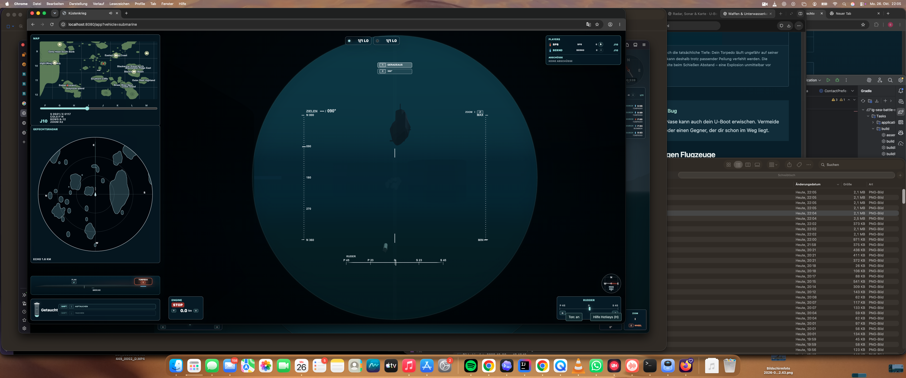

Torpedos gegen Oberflächenziele
Aufgetaucht und auf Sehrohrtiefe sind Torpedos deine Hauptwaffe gegen Schiffe an der Oberfläche. Richte das Boot aus; in der Zielansicht zeigt der Blick nach vorn. Mit Leertaste oder Enter feuerst du, sobald die Waffe bereit ist.
Schieße nicht nur auf den aktuellen Standort eines fahrenden Gegners. Halte in Fahrtrichtung vor: Während dein Torpedo unterwegs ist, läuft das Ziel weiter. Kontrolliere die Karte auf Inseln und die Umgebung auf eigene Schiffe. Ein Treffer an der Küste ist ein verbrauchter Torpedo, kein Treffer auf das dahinterliegende Schiff.
U-Boot gegen U-Boot – auch unter Wasser
- Tauche und suche in der Unterwasseranzeige nach einer U-Boot-Kontur. Prüfe die Zuordnung; die einfarbige Anzeige unterscheidet Freund und Feind nicht wie das Oberflächenradar.
- Bringe dein Boot auf eine zum Ziel passende Tiefe. Tief gestartete Torpedos bleiben unter Wasser und können getauchte U-Boote treffen; sie treffen kein beliebiges Schiff über ihnen.
- Richte den Bug auf den vorausberechneten Treffpunkt aus. Ein Sonarkontakt allein bedeutet nicht, dass er in deiner Schusslinie oder auf deiner Tiefe liegt.
- Feuere und beobachte die Lage weiter. Ein Torpedo übernimmt weder Kurskorrekturen noch die Verfolgung des Ziels.


U-Boot und Torpedo voraus · Detail
Flak: nur oben, aber nicht nur gegen Flugzeuge
Aufgetaucht erreichst du die Flak mit F. Pfeiltasten bewegen die Waffe, Leertaste oder Enter feuert. Mit B kehrst du zur Brücke zurück. Zum Abtauchen verlässt du den offenen Luftkampf und wartest, bis das Boot wirklich unter die Oberfläche geht.
Die Flak kann Flugzeuge ebenso wie Schiffe bekämpfen. Mit der Flak zählen gegen Torpedoboote die Treffer an den Aufbauten; ihre Rumpftreffer haben dort keine versenkende Wirkung. Auch ein anderes U-Boot auf Sehrohrtiefe ist ein lohnendes Ziel: Ein Treffer am Sehrohr kann es versenken. Du musst aber nicht zwingend das kleine Rohr direkt erwischen: Flakgeschosse dringen auch ins Wasser ein. Treffer ins Wasser unmittelbar unterhalb des Sehrohrs können daher die darunterliegenden Aufbauten des U-Boots treffen und es ebenfalls versenken. Die schnelle Schussfolge der Flak bietet dafür gute Chancen. Dafür musst du selbst aufgetaucht sein. Dein U-Boot hat keine Kanone und wirft keine Wasserbomben.
Was du unter Wasser hörst
Explosionen im Wasser klingen schon auf Sehrohrtiefe gedämpft und tief getaucht noch dumpfer. Wasserbomben in deiner Nähe – besonders Treffer – sind deutlich zu hören. Schüsse, Flak und Flugzeuge hörst du unter Wasser dagegen nicht. Stille ist deshalb kein Beweis dafür, dass oben niemand wartet.